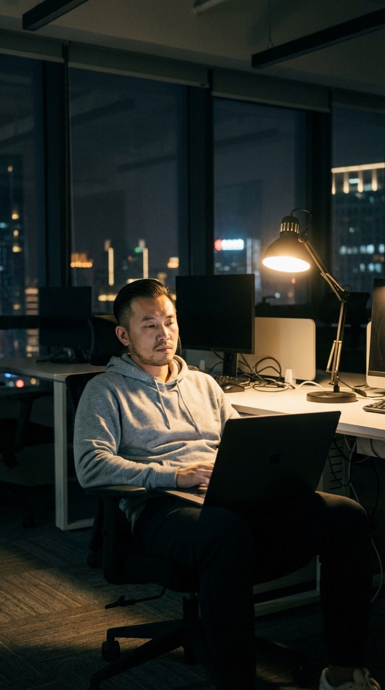
凌晨三点，整个办公室只剩我一个人。
三个月前这里还坐着十二个人。现在，椅子比人多。
我盯着银行账户余额：¥847,293。
三十天。三十天后，这家公司就是一具尸体。
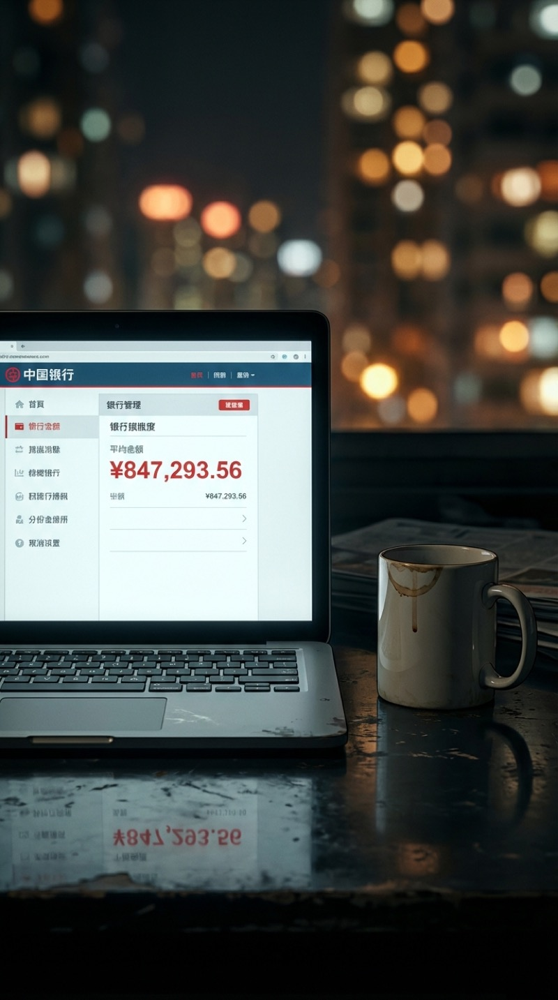
八十四万七。
不够买一辆好车，但够给十二个人发最后一个月工资。
当初怎么就信了"all in AI"这句鬼话。
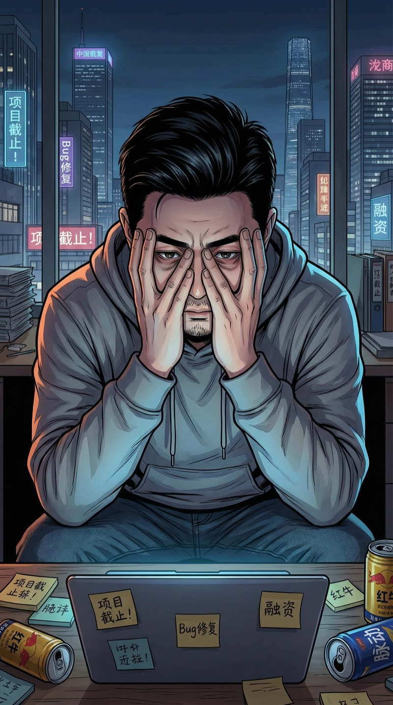
融资谈了十七家，全部拒绝。
"方向很好，但是……"
"但是"后面的话翻译过来就是：滚。
我揉了揉脸，指缝里看见的全是待付账单。
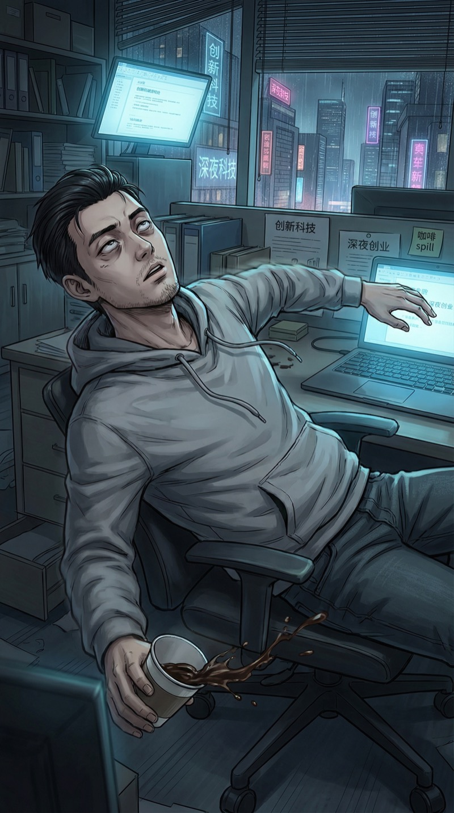
站起来想去接水，眼前一黑——
身体像断了电一样直接栽了下去。
咖啡杯翻了，最后一点咖啡洒在键盘上。
好讽刺。人和公司一起倒。
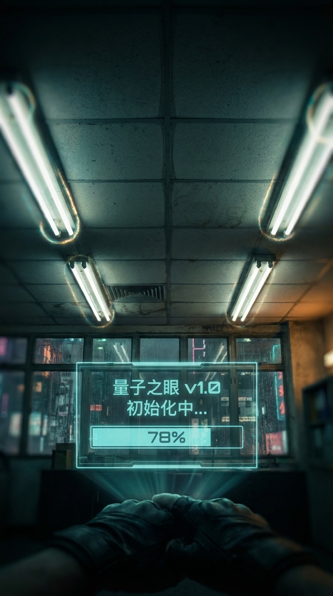
……
我睁开眼。
天花板还是那个天花板，日光灯还是那个日光灯。
但是视野里多了一层……什么东西？
一个半透明的蓝色界面，浮在我眼前。
"量子之眼 v1.0 初始化中……78%"
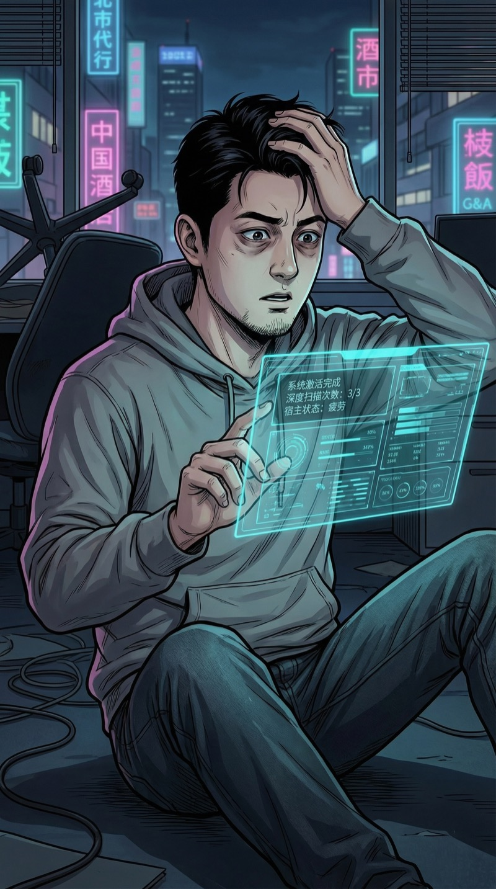
"量子之眼已激活。剩余深度扫描次数：3/3。"
我伸手去摸那个界面——手直接穿过去了。
低血糖幻觉？通宵后遗症？还是……我脑子终于坏了？
使劲揉眼睛。
它还在。
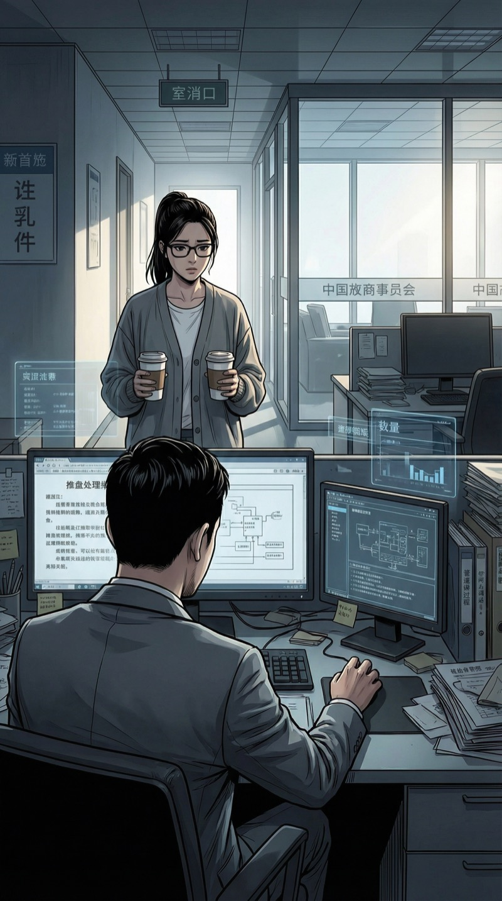
"又通宵？"
林小棠端着两杯咖啡走进来，看了一眼地上的咖啡渍和翻倒的椅子。
"你是不是摔了？"
"没有，就是……椅子不太好。"
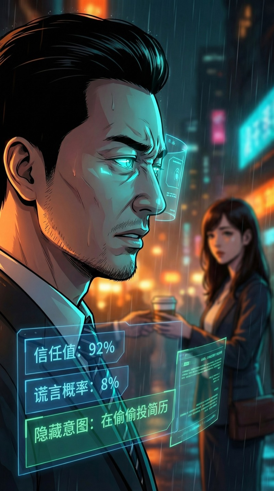
我下意识看了她一眼——
然后……那个界面又出现了。
她头顶浮出一组数据：
心一下沉到了底。
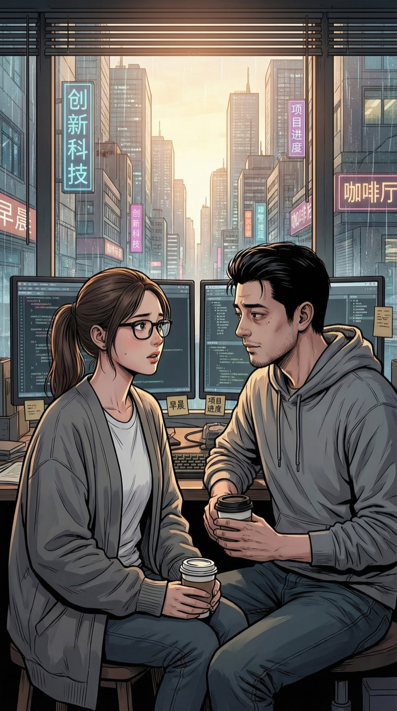
"小棠，最近是不是压力太大了？"
她愣了一下，手指不自觉地捏紧了杯子。
"还好……就是有时候觉得看不到方向。"
我笑了笑："我也看不到。但我不想一个人瞎摸。"
她低头喝了口咖啡，没接话。
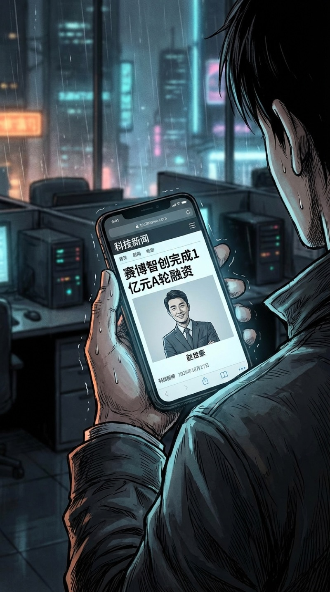
刚缓过来，手机震了。
《赛博智创完成1亿元A轮融资，加速布局AI赛道》
赵世豪。那个笑容像PS过的男人。
做的方向跟我们95%重叠。
人家一亿，我八十四万。
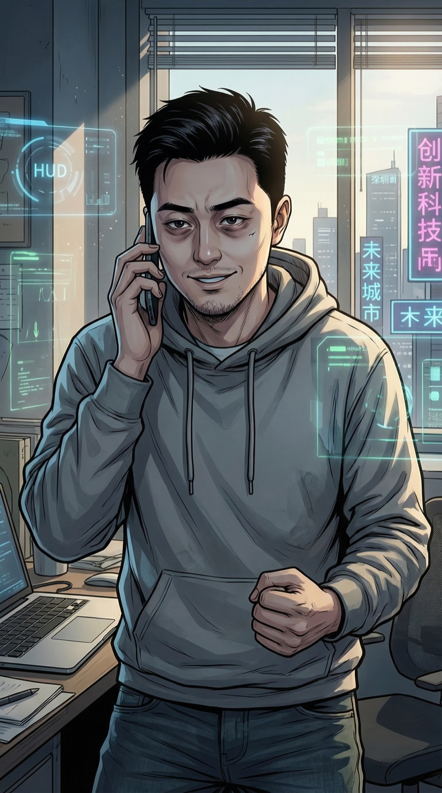
电话来了。老陈。
"小朱啊，你那个项目……再考虑考虑吧。"
翻译：别做了。
"陈总，我理解您的顾虑。要不我们见面聊聊？"
翻译：求你再给我一次机会。
电话那头停顿了三秒。
"行吧，明天下午，老地方。"
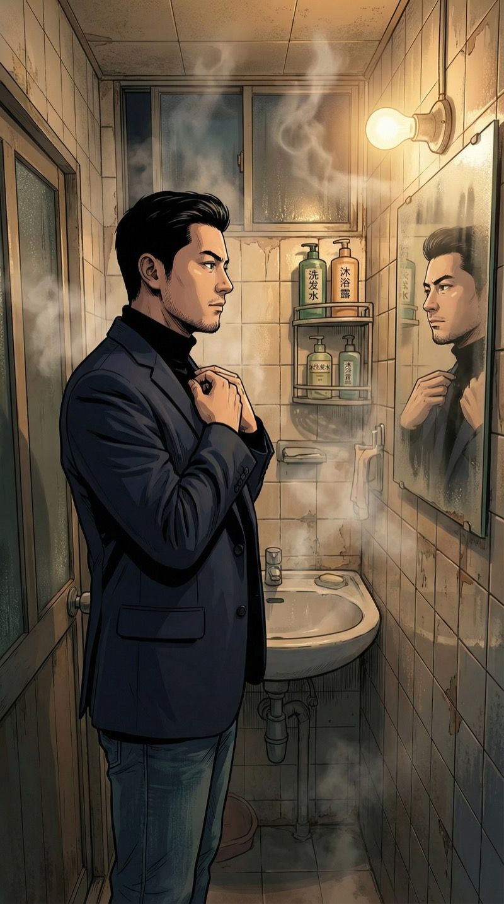
镜子里的人看起来像是四十岁。
我才三十二。
换上唯一一件像样的外套。深色高领毛衣配藏蓝西装外套。
——看起来像个还没倒闭的CEO。
这大概是目前最大的成就。
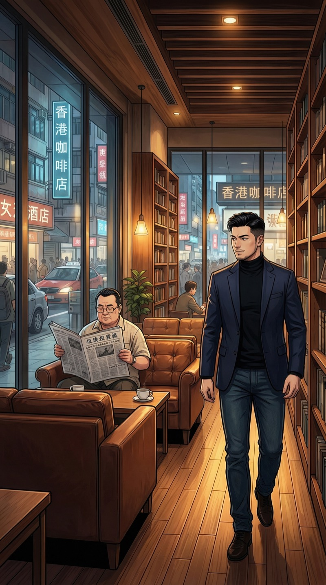
推门进去，老陈已经到了。
坐在角落里看报纸，旁边放着一杯不加糖的美式。
创投圈人称"活阎王"——看着像邻居大叔，砍估值的时候像砍瓜切菜。
我深吸一口气走了过去。
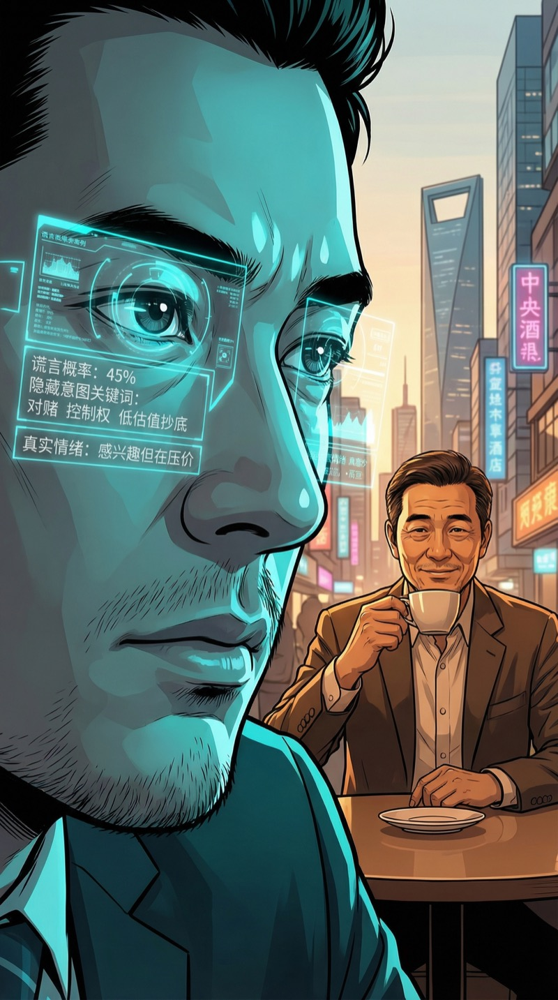
我看向老陈——
量子之眼再次激活。第二次深度扫描。
真实情绪：感兴趣但在压价
嘴上说不投了，数据说他想抄底。
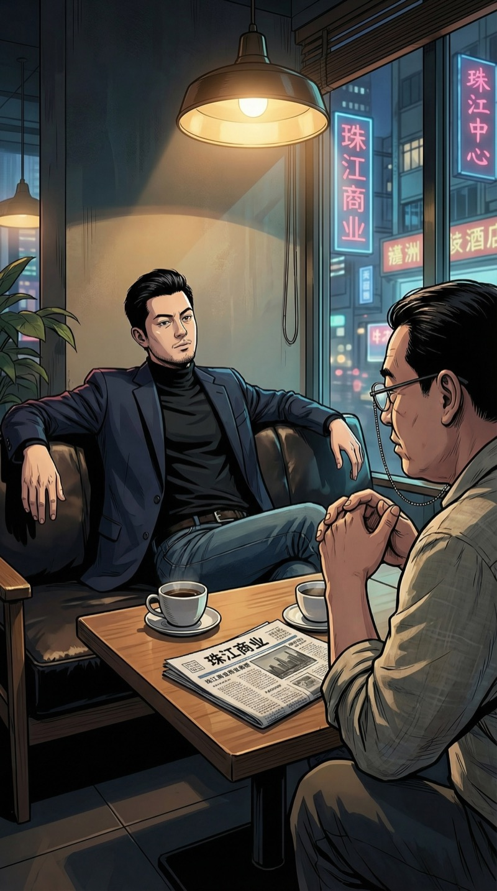
"陈总说得对，我们确实还需要再想想。"
我靠着沙发，尽量让自己看起来不像一个快破产的人。
"其实最近有别的基金在接触我们……"
老陈的眉毛微微抬了一下。
好。鱼咬钩了。
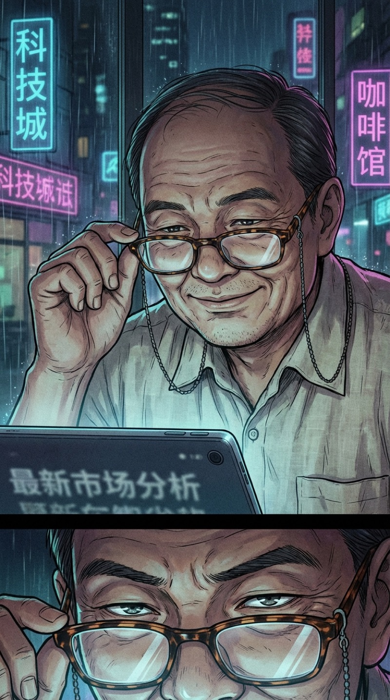
老陈笑了笑："哦？是哪家？"
声音平稳，但我注意到他无名指轻轻敲了一下杯沿。
就算没有量子之眼，混了这么多年，有些微表情还是能读的。
他慌了。微微地。
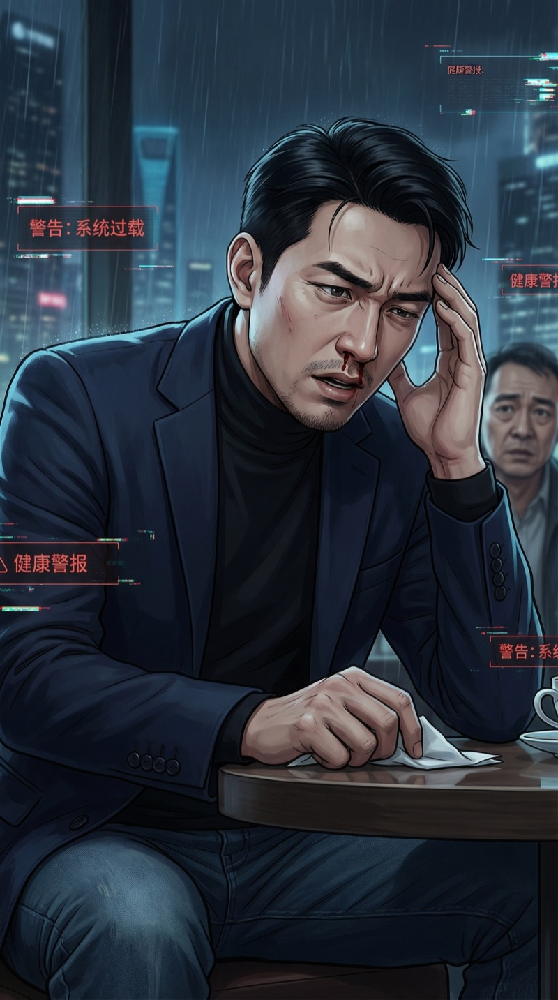
突然——
脑袋像被电钻钻了一下。
鼻血。
我以最快速度抓起纸巾捂住。
"你没事吧小朱？" 老陈问。
"上火了，没事陈总。" 我笑着说。
心里在骂：这破系统不会是要我命吧？
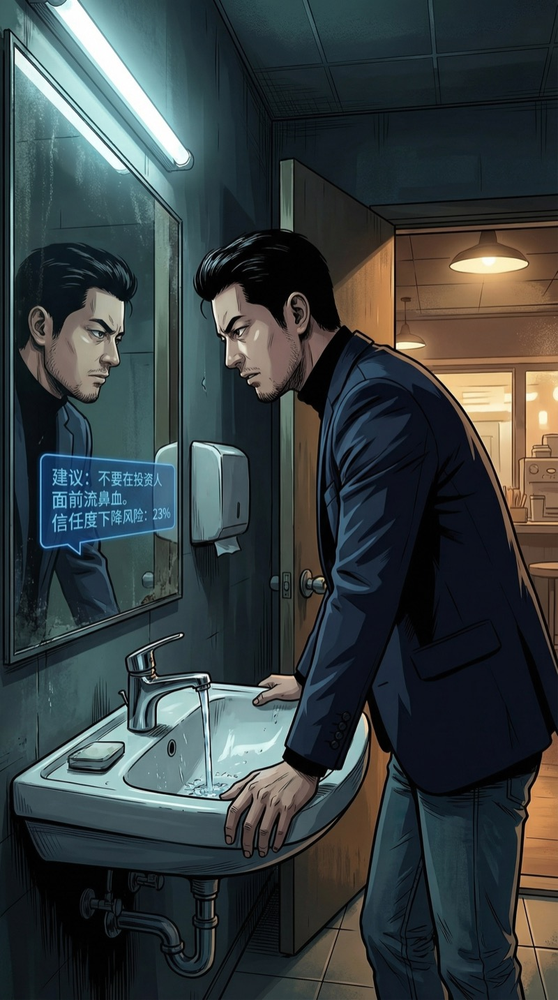
洗手间里，我对着镜子擦鼻血。
系统沉默了两秒，然后：
它居然有幽默感。这让我更害怕了。
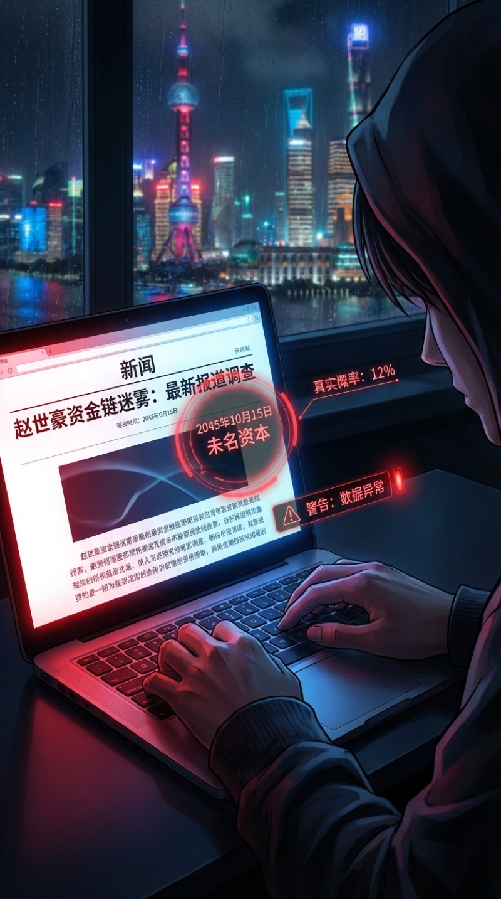
回到办公室。
深度扫描用完了，但量子之眼的残余分析还在后台运行。
它在那条融资新闻上标了一个红色警告：
什么意思？
赵世豪那个完美笑容背后……一亿融资是假的？
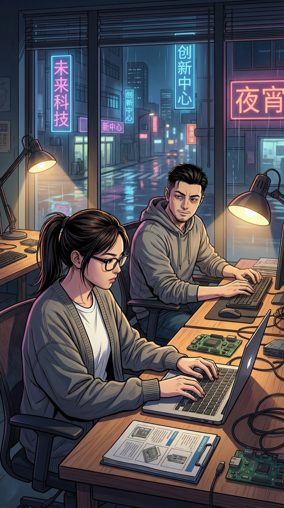
林小棠今晚也没走。
"小棠，我跟你说个事。"
她摘下眼镜揉了揉眼睛。
"说。"
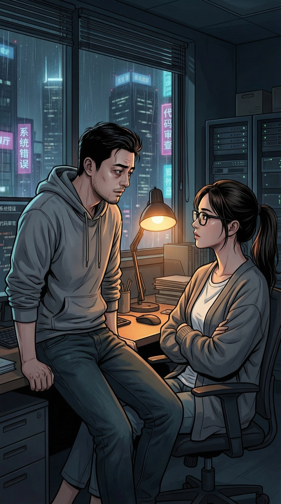
"公司账上还有八十四万。够撑一个月。"
她没说话。
"今天见了老陈，他有兴趣但在压价。赵世豪的融资……我怀疑有水分。"
"所以呢？"
"所以我需要你。不是客气话。是真的需要。"
她看了我很久。
"你这个人，最大的优点就是不装。"
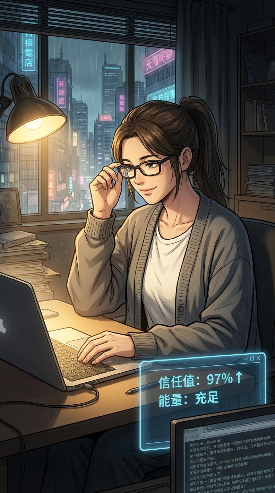
她重新戴上眼镜，转回电脑。
"行了，别煽情了。说说赵世豪的事，我帮你查。"
我没忍住笑了。
有的时候，不需要系统也能看穿一个人。
真诚就行。
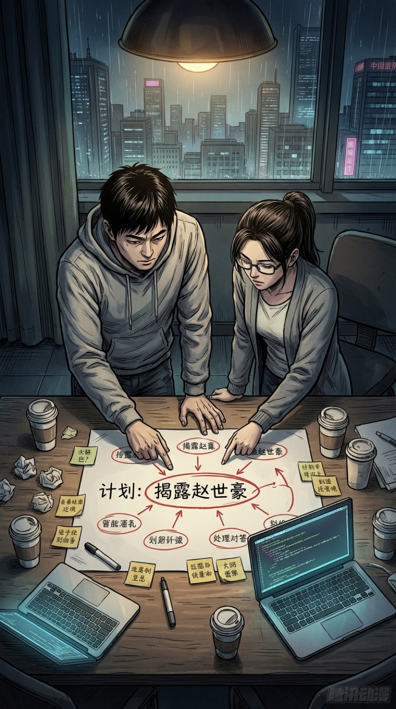
凌晨一点，我们开始策划。
如果赵世豪真在造假融资，那他比我更脆弱。
"约他见面，谈合作。" 我在纸上画了个圈。
"假合作？" 小棠挑眉。
"不。真谈。只是顺便看看他是不是在吹牛。"
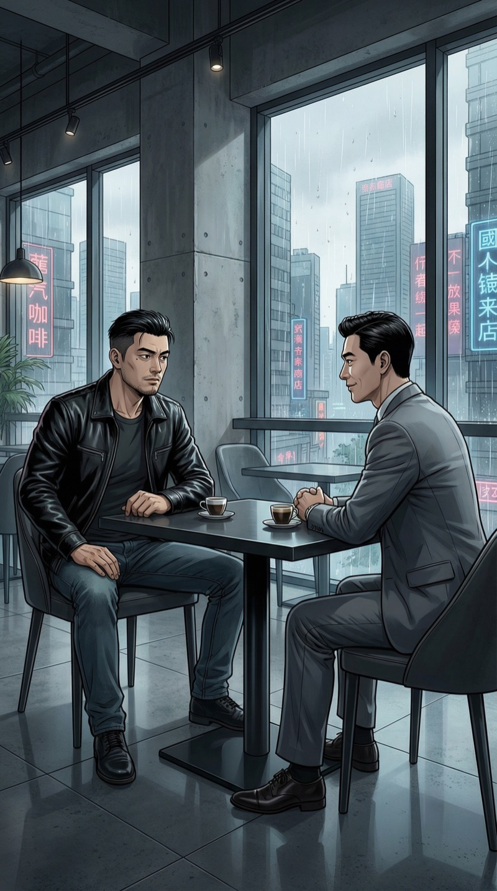
赵世豪的笑容一如既往地完美。
"朱总！久仰久仰。没想到你主动约我。"
今天我要亲自验证。
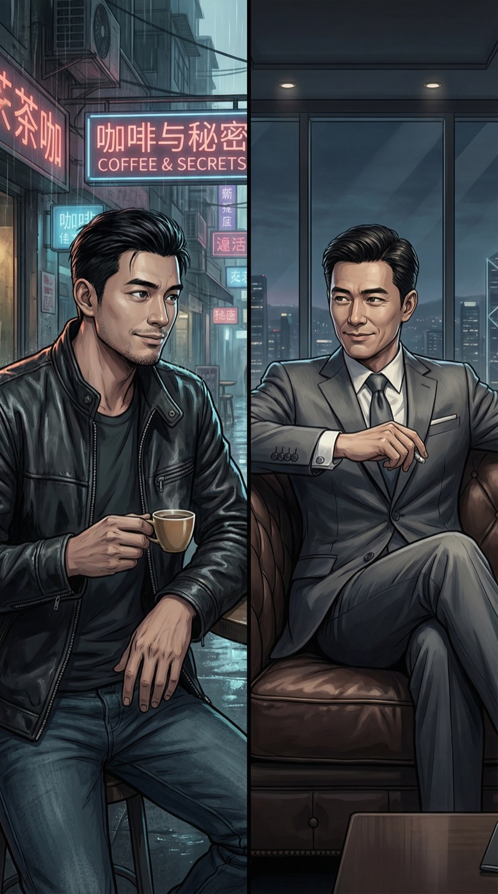
"赵总融资顺利，恭喜。星辰资本，大手笔啊。"
他的笑容更大了："过奖过奖。"
"星辰的刘总我也认识，改天一起吃饭？"
我根本不认识什么刘总。但我看到了——
他的右手，不自觉地调了一下袖扣。
一个不需要量子之眼就能读懂的信号：
他在撒谎。
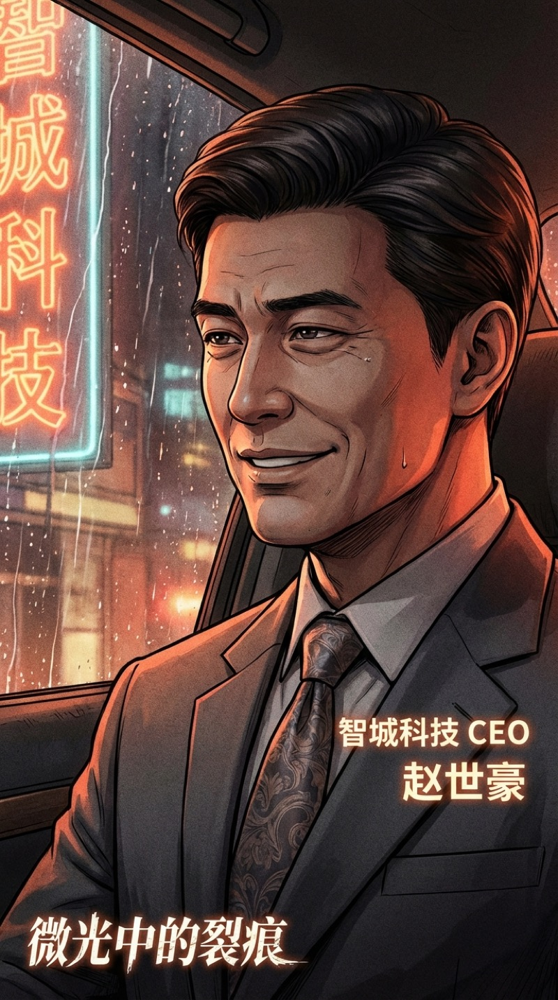
赵世豪嘴角微微抽了一下。
只有零点几秒。但我捕捉到了。
"刘总最近挺忙的，改天吧。" 他端起咖啡杯挡住了半张脸。
锤实了。
一亿融资，大概率是纸上谈兵。
我这个快破产的人，可能比他有钱。
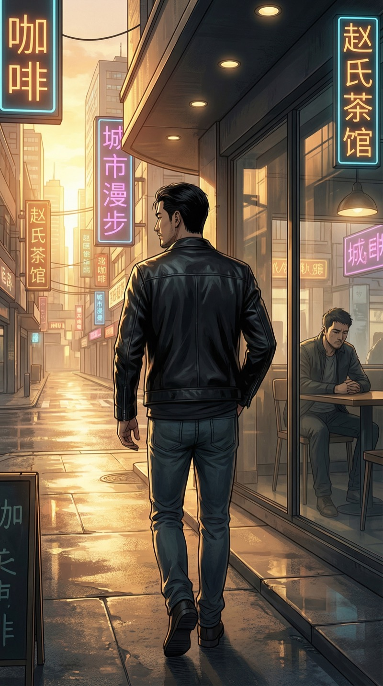
走出咖啡馆，阳光打在脸上。
口袋里的手攥成了拳头——不是紧张，是兴奋。
赵世豪还坐在里面，笑容终于收了。
我发了条微信给小棠：
"确认了。他在吹牛。"
三秒后回复："那我们有戏。"
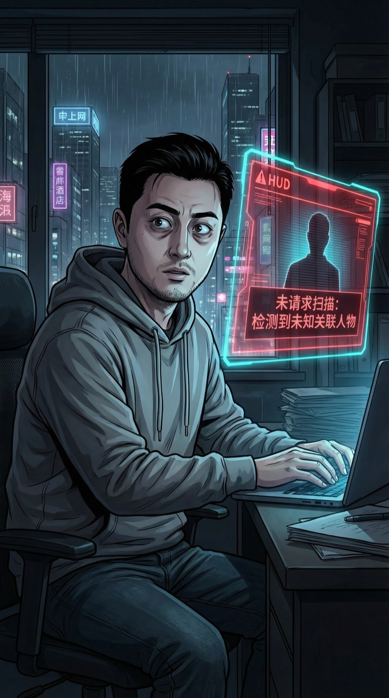
深夜。独自一人。
量子之眼突然自己亮了。
不是我启动的。
屏幕上浮出一条消息：
"朱江，你做得不错。但你漏算了一个人。"
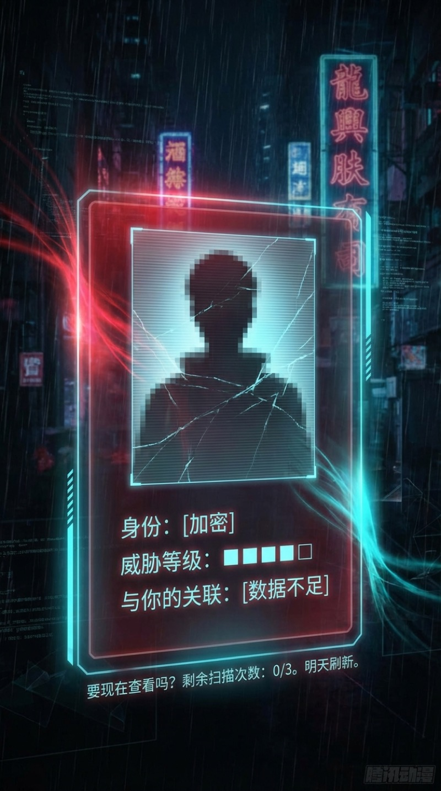
一个模糊的人影数据。
与你的关联：[数据不足]
我从没扫描过这个人。
是它自己找到的。
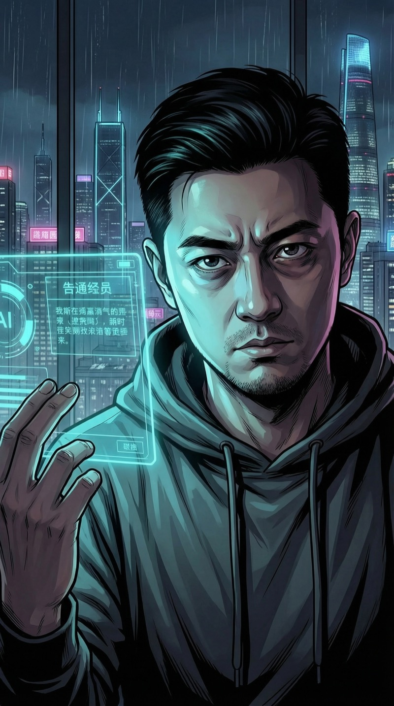
"不查了。"
我关掉提示。
不是不想知道——是不想让这个系统替我决定什么重要、什么不重要。
我有自己的眼睛。
量子之眼沉默了三秒，然后弹出最后一行字：
它在学我。
而我还不知道它是谁放进来的。
——第一章·完——
（明天的扫描次数刷新后，那个人影还会在吗？）
—— 第一章 · 完 ——